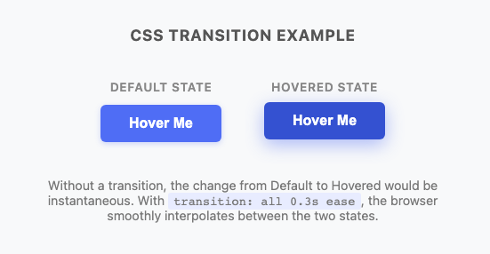
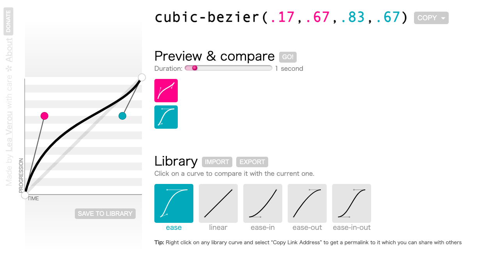
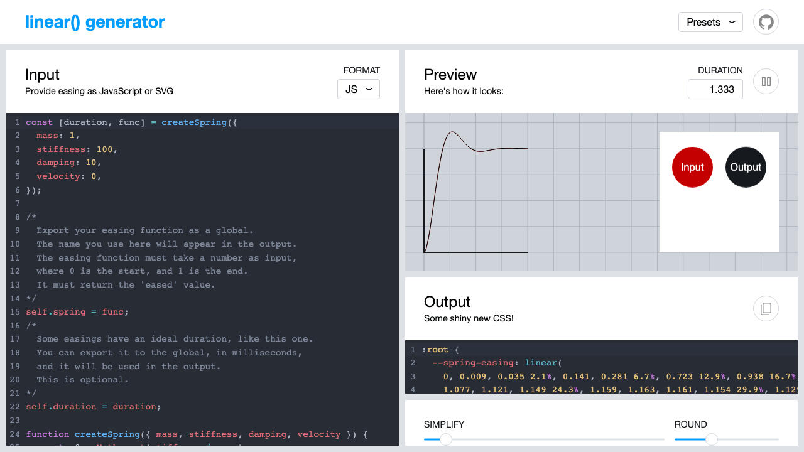
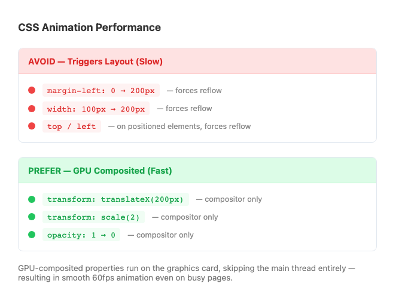

Motion that guides attention, communicates state, and makes interfaces feel alive.
setInterval. Ran on the browser's main thread. Under load it caused jank — choppy or frozen animations.-webkit-transform, -moz-transform, -ms-transform. You do not need these for new projects — write the unprefixed standard property and move on.
/* You may see this in OLD code — do not copy */
-webkit-transform: rotate(45deg);
-moz-transform: rotate(45deg);
-ms-transform: rotate(45deg);
transform: rotate(45deg); /* ← just this */| Era | Problem |
|---|---|
| Flash | Plugin required; no mobile |
| JS animation | Main thread; jank under load |
| CSS transitions | GPU compositor; smooth 60fps |
A transition watches a CSS property for changes. When the property changes — hover, class toggle, focus — the browser animates smoothly from the old value to the new one instead of snapping instantly.
/* Without transition — instant */
button {
background-color: #4f6df5;
}
button:hover {
background-color: #e74c3c; /* SNAP */
}
/* With transition — animated */
button {
background-color: #4f6df5;
transition: background-color 0.3s ease;
}
button:hover {
background-color: #e74c3c; /* SMOOTH */
}Hover the boxes to compare:
Instant snap
Smooth animation
transition: background .4s ease, transform .3s ease-out;
button {
background-color: #4f6df5;
/* WHAT to watch */
transition-property: background-color, transform;
/* HOW LONG */
transition-duration: 0.2s;
/* THE PACE */
transition-timing-function: ease-out;
/* WAIT BEFORE STARTING */
transition-delay: 0s;
}
button:hover {
background-color: #3a56d4;
transform: translateY(-2px);
}| Property | What it controls |
|---|---|
| transition-property | Which CSS property to animate (all, opacity, transform, etc.) |
| transition-duration | How long the animation takes (0.3s = 300ms) |
| transition-timing-function | The pace curve (ease, linear, cubic-bezier…) |
| transition-delay | Wait time before animation starts — useful for stagger effects |

Playground: adjust each sub-property then click Animate to see the effect:
transition-duration: 0.3s transition-timing: ease transition-delay: 0s
transition-delay in ActionOne of the most polished patterns in UI design: multiple elements sharing the same transition, but with incrementally increasing transition-delay values so they animate in sequence rather than all at once.
/* Each nav item gets a longer delay */
.nav-item:nth-child(1) { transition-delay: 0ms; }
.nav-item:nth-child(2) { transition-delay: 60ms; }
.nav-item:nth-child(3) { transition-delay: 120ms; }
.nav-item:nth-child(4) { transition-delay: 180ms; }
.nav-item:nth-child(5) { transition-delay: 240ms; }
/* All share the same transition */
.nav-item {
opacity: 0;
transform: translateX(-20px);
transition: opacity 0.35s ease,
transform 0.35s ease;
}
/* Triggered by a class toggle */
.nav.open .nav-item {
opacity: 1;
transform: translateX(0);
}Click ▶ Stagger In — each item arrives with a 80ms offset:
/* Single property */
button {
transition: background-color 0.2s ease-out;
}
/* Multiple — comma-separated */
button {
transition: background-color 0.2s ease-out,
transform 0.15s ease-out;
}
/* All (use with caution) */
button {
transition: all 0.2s ease-out;
}transition: all in production — it watches every property, including ones you don't want to animate. Name them explicitly.
:hover.Hover both buttons to see the difference:
Animates in AND out
Animates in, snaps back
property duration timing delay
| Value | Feel | Best for |
|---|---|---|
| ease | Slow start → fast → slow end | Default; most UI interactions |
| ease-out | Fast start → slow end | Hover effects; elements "landing" |
| ease-in | Slow start → fast end | Elements leaving the screen |
| ease-in-out | Slow → fast → slow | Longer, across-screen motion |
| linear | Constant speed | Spinning loaders; looping animations |
Click ▶ Run — all five start simultaneously. Watch how they accelerate differently:
ease-out (green) rockets off first. ease-in (red) starts slow then surges. linear (purple) never changes speed.
/* All keywords are cubic-bezier shortcuts */
/* ease = */ cubic-bezier(0.25, 0.1, 0.25, 1.0)
/* Springy overshoot — bounces past target */
cubic-bezier(0.34, 1.56, 0.64, 1)
/* Sharp deceleration (snappy landing) */
cubic-bezier(0.22, 1, 0.36, 1)
/* steps() — discrete jumps, no smooth interpolation */
transition: background-position 0.8s steps(8);
/* linear() — piecewise spring (2023+) */
.spring {
transition: transform 0.6s linear(
0, 0.5, 1.05, 0.95, 1.02, 0.98, 1
);
}Hover each box — feel the difference in motion character:
cubic-bezier
(.34,1.56,.64,1)
steps(8)
discrete jumps
linear()
piecewise spring

cubic-bezier.com — drag control points to craft a curve

linear-easing-generator.netlify.app — generate spring physics as linear()
opacity — 0 to 1 (GPU-accelerated)transform — all functions (GPU-accelerated)background-color, color, border-colorbox-shadow, text-shadowwidth, height, padding, marginfont-size, border-radius, max-heightdisplay — none / block / flex (no interpolation)font-family — no middle value between fontsposition — static / relative / absolutevisibility — partially supportedwidth, height, margin, padding) — they trigger browser layout recalculation on every frame. Prefer transform and opacity.
Hover each box — smooth ✅ properties animate gracefully; discrete ❌ ones snap or disappear:
fades to 15%
blends to red
scale + skew
glow ring
just vanishes
snaps invisible
display: none — The Modern SolutionThe long-standing problem: you couldn't transition into or out of display: none. Now solved with two 2023 features.
.dialog {
display: none;
opacity: 0;
transform: translateY(12px);
/* transition-behavior: allow-discrete
tells the browser to include display
in the transition sequence */
transition: opacity 0.3s ease,
transform 0.3s ease,
display 0.3s allow-discrete;
}
.dialog.is-open {
display: block;
opacity: 1;
transform: translateY(0);
}
/* @starting-style defines the "from" values
when the element first becomes visible */
@starting-style {
.dialog.is-open {
opacity: 0;
transform: translateY(12px);
}
}transition-behavior: allow-discrete — includes display in the transition. The "off" value is held until the exit animation finishes.@starting-style — defines values the element transitions FROM when it first appears. Without it, entry has no animation.visibility: hidden + pointer-events: none + opacity: 0 — or JS libraries like GSAP.
Live demo — uses @starting-style + allow-discrete right on this page:
display:none kicks in.
transform — Moving, rotating, scaling, skewing never triggers layout or paint. The element is promoted to a compositor layer; the GPU handles interpolation.opacity — Fading is also compositor-only.transform: translateX(100px) over left: 100px. Prefer opacity over toggling visibility. The visual result looks the same — the browser work is dramatically different.
Hover both boxes — both move identically, but one triggers full page reflow on every frame:
left: triggers layout
transform: GPU only

Animating layout properties (left, width, height) forces the browser through all three pipeline stages. transform and opacity skip directly to compositing.
Every time CSS changes, the browser may run through up to three stages. The more stages it runs, the more expensive the operation — and the higher the risk of dropped frames.
Calculate the size and position of every element on the page. Any property that changes an element's box model triggers this — width, height, padding, margin, top, left, font-size.
Most expensive. Invalidates everything downstream.
Fill in the pixels — colors, backgrounds, borders, text, shadows. Triggered by visual-only changes that don't move boxes: background-color, color, box-shadow, border-color.
Medium cost. Skips layout but must re-rasterize.
Move pre-painted layers around on screen. Only transform and opacity reach this stage — they never trigger layout or paint.
Cheapest. Runs on the GPU compositor thread — independent of the main thread entirely.
left: 100px runs all three stages on every frame at 60fps — 60 layout passes per second. On a complex page this causes visible jank, especially on mobile.
transform: translateX(100px) skips Layout and Paint entirely. The browser just moves a pre-composited GPU layer. Same visual result; dramatically less work.
transform or opacity instead of a layout or paint property, do it. The visual result is often identical — the browser work is not.
will-change — eliminate the first-frame flashThe browser composites transform on its own layer — but it creates that layer when the transition starts. On slow hardware this causes a visible flash or stutter on the very first hover.
will-change tells the browser: "create the compositor layer now, before any animation happens."
/* The browser composites this card NOW —
so the first hover is instant and smooth */
.card {
will-change: transform;
}
.card:hover {
transform: scale(1.03);
transition: transform 0.2s ease-out;
}will-change: transform to every element on the page — that defeats the purpose and can degrade performance.
will-change with JavaScript on mouseenter, remove it on transitionend. The browser pre-promotes the layer only when needed.
prefers-reduced-motion — respect the userSome users have vestibular disorders where motion on screen causes nausea, dizziness, or headaches. macOS, iOS, Windows, and Android all have an "Reduce Motion" system setting. When enabled, @media (prefers-reduced-motion: reduce) matches.
/* Default: animated */
.button {
transition: transform 0.2s ease-out,
box-shadow 0.2s ease-out;
}
.button:hover { transform: translateY(-3px); }
/* User has "Reduce Motion" turned on */
@media (prefers-reduced-motion: reduce) {
.button {
transition: none; /* instant — no animation */
}
}prefers-reduced-motion: reduce
translate() & rotate()transform visually repositions/reshapes an element without affecting document flow — other elements don't shift to accommodate it.
/* Move 50px right, 20px down */
transform: translate(50px, 20px);
/* Single axis shortcuts */
transform: translateX(50px);
transform: translateY(-20px); /* UP */
/* % = relative to element's own size */
transform: translateX(100%); /* = element width */transform: rotate(45deg); /* clockwise */
transform: rotate(-90deg); /* counter-clockwise */
transform: rotate(0.25turn); /* quarter turn */
transform: rotate(1turn); /* full spin */Click a button — watch the box transform. Notice the box stays in flow; surrounding content does not shift:
scale(), skew() & Combining Transformstransform: scale(1.2); /* 20% larger */
transform: scale(1.5, 0.8); /* wider & shorter */
transform: scaleX(2); /* double width only */
transform: scale(0); /* shrink to nothing */transform: skewX(15deg); /* slant left-to-right */
transform: skewY(5deg); /* slant top-to-bottom */
transform: skew(15deg, 5deg); /* both axes *//* Applied right-to-left */
/* translate first, then rotate */
transform: translateX(100px) rotate(45deg);
/* rotate first, then translate along rotated axis */
transform: rotate(45deg) translateX(100px);
/* Practical hover effect */
.card:hover {
transform: translateY(-8px) scale(1.02) rotate(-1deg);
}rotate(45deg) translateX(100px) translates along the rotated axis — very different from the reverse order.
Order matters demo — same values, different order → completely different results. Click to animate both simultaneously:
rotate(45deg)
translateX(70px)
translateX(70px)
rotate(45deg)
Left box: rotates first, then translates along the rotated axis (diagonal).
Right box: translates right first, then rotates in place.
/* Default: center center */
transform-origin: top left; /* page-turn effect */
transform-origin: bottom center; /* grow upward */
transform-origin: 0 50%; /* left edge, centered */Same rotate(135deg) — three different origins. Click to compare:
center center
(default)
top left
(page-turn)
bottom right
.centered {
position: absolute;
top: 50%;
left: 50%;
/* top-left corner is now at center;
shift back by 50% of own size */
transform: translate(-50%, -50%);
}.card {
translate: 0 0;
scale: 1;
rotate: 0deg;
/* Transition each independently */
transition: translate 0.2s ease-out,
scale 0.15s ease-out;
}
.card:hover {
translate: 0 -8px;
scale: 1.02;
}transform./* Small value = dramatic depth effect */
.scene { perspective: 200px; }
/* Typical UI range: 600–1000px */
.scene { perspective: 800px; }
/* Large value = subtle perspective */
.scene { perspective: 1200px; }
.card {
transform: rotateY(30deg); /* now has depth */
}perspective goes on the parent element (the "scene"), not on the element being transformed. This establishes the viewer's distance from the z=0 plane.
Drag the slider — same rotateY(45deg), watch how perspective changes the depth illusion:
perspective: 600px
Small value = dramatic/exaggerated. Large value = subtle/flat. Typical UI: 600–900px.
/* Tilt top toward viewer (nod) */
transform: rotateX(45deg);
/* Spin left-right (shake head) */
transform: rotateY(180deg);
/* Same as 2D rotate() */
transform: rotateZ(45deg);
/* Move toward/away on Z axis */
transform: translateZ(100px);
transform: translateZ(-100px);transform-style: preserve-3d & backface-visibility/* The scene provides perspective */
.scene {
perspective: 800px;
width: 300px;
height: 200px;
}
/* The card flips — MUST have preserve-3d
so children exist in 3D space */
.card {
width: 100%;
height: 100%;
position: relative;
transform-style: preserve-3d;
transition: transform 0.6s ease-in-out;
}
.scene:hover .card {
transform: rotateY(180deg);
}
/* Both faces fill the card absolutely */
.card__face {
position: absolute;
width: 100%;
height: 100%;
backface-visibility: hidden; /* hide when facing away */
}
/* Back face starts pre-rotated */
.card__face--back {
transform: rotateY(180deg);
}transform-style: preserve-3d on the card container — keeps children in 3D space. Without it, children are "flattened" to the parent's 2D plane.backface-visibility: hidden on both faces — makes each face invisible when its back is toward the viewer.rotateY(180deg) — so it faces away from the viewer by default and only becomes visible after a flip.overflow: hidden, clip-path, filter, or mix-blend-mode on an ancestor element will break preserve-3d and flatten the 3D context.
Hover (or click) to flip — all three CSS properties working together:
.btn {
transform: translateY(0);
box-shadow: 0 2px 6px rgba(0,0,0,.12);
transition:
transform .15s ease-out,
box-shadow .15s ease-out;
}
.btn:hover {
transform: translateY(-3px);
box-shadow: 0 8px 20px rgba(0,0,0,.18);
}
.btn:active {
transform: translateY(-1px);
}.image-wrapper {
overflow: hidden; /* clips */
border-radius: 8px;
}
.image-wrapper img {
transition: transform .4s ease-out;
}
.image-wrapper:hover img {
transform: scale(1.08);
}.panel {
opacity: 0;
transform: translateY(12px);
transition: opacity .3s ease,
transform .3s ease;
}
.panel.is-visible {
opacity: 1;
transform: translateY(0);
}:hover or a toggled class. CSS handles the smooth interpolation automatically.
property, duration, timing-function, delay. Put the transition on the default state, not :hover.
ease-out for most hover effects. cubic-bezier() for custom curves. linear() for spring physics (2023+).
transform and opacity are compositor-only. All other properties trigger layout/paint. Use sparingly — avoid transition: all.
translate, rotate, scale, skew never affect document flow. Order matters when combining. Modern: use individual translate/rotate/scale properties.
perspective on the parent. transform-style: preserve-3d on the container. backface-visibility: hidden on both faces. Back face pre-rotated 180°.
@media (prefers-reduced-motion: reduce). Functional transitions (state change) = OK. Decorative parallax/fly-ins = disable.
@starting-style + transition-behavior: allow-discrete for enter/exit animations. Chrome 117+, Firefox 129+, Safari 17.5+.
left: 100px and transform: translateX(100px)? They look the same.left requires layout recalculation on every frame. transform: translateX() is handled by the GPU compositor — it just moves a pre-composited layer. On a complex page, this is the difference between smooth 60fps motion and visible jank.transition: all to keep CSS simple?transition: all monitors every property — including ones you didn't intend to animate. If a CSS variable changes during a theme switch, it will animate unexpectedly. Always name your properties: transition: transform 0.2s ease-out, opacity 0.2s ease-out.transform-style: preserve-3d on the card container, or missing backface-visibility: hidden on the faces. Also check that no ancestor has overflow: hidden, filter, clip-path, or mix-blend-mode — these break the 3D context.:hover rule instead of the default state. When hover ends, the :hover styles (including the transition) are removed, so the return snaps instantly. Use sparingly — two-way transitions usually feel more polished.setTimeout adds a class to trigger the transition. Modern approach: use @starting-style — define starting values, and the browser auto-transitions from them when the element first renders. Supported in all current browsers since 2024.